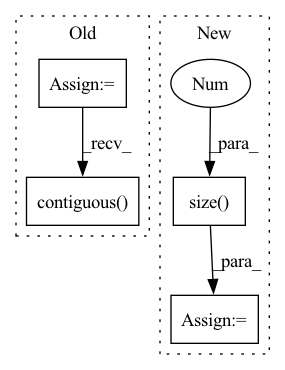

Pattern ID :12664

Before Change
g_kfe = self._to_kfe_sua(g, kfe_x, kfe_gy)
m2.mul_(self.alpha).add_((1. - self.alpha) * bs, g_kfe ** 2)
g_nat_kfe = g_kfe / (m2 + self.eps)
g_nat = self._to_kfe_sua(g_nat_kfe, kfe_x.t(), kfe_gy.t())
if bias_grad is not None:
gb = g_nat[:, -1, s[2] // 2, s[3] // 2]
// bias.grad.data = gb
g_nat = g_nat[:, :-1]
// weight.grad.data = g_nat
return g_nat.contiguous(), gb.contiguous()
def _precond_intra_sua(self, group: dict[str, Union[LayerType, Iterable[torch.Tensor]]], weight_grad: torch.Tensor, bias_grad: Optional[torch.Tensor],
) -> tuple[torch.Tensor, Optional[torch.Tensor]]:
Preconditioning for KFAC SUA.
After Change
gb = gb[None, :, None, None].repeat(1, 1, s[2], s[3]) // (out, 1, kh, kw)
g = torch.cat([g, gb], dim=1) // (out, in + 1, kh, kw)
N = state.x.size(0)
g_kfe = self.to_kfe_sua(g, state.kfe_x, state.kfe_gy) // (out, in + 1, kh, kw)
m2 = self.alpha * state.m2 + (1 - self.alpha) * N * (g_kfe.square()) // (out, in + 1, kh, kw)
g_nat_kfe = g_kfe / (m2 + self.eps) // (out, in + 1, kh, kw)
g = self.to_kfe_sua(g_nat_kfe, state.kfe_x.t(), state.kfe_gy.t()) // (out, in + 1, kh, kw)
if gb is not None:
gb = g[:, -1, s[2] // 2, s[3] // 2].contiguous() // (out)
g = g[:, :-1] // (out, in, kh, kw)
g = g.contiguous()
return g, gb
def _precond_intra_sua(self, mod: nn.Conv2d, weight_grad: torch.Tensor,
In pattern: SUPERPATTERN
Frequency: 3
Non-data size: 4
Instances
Fragment ID: 42942751
Project Name: ain-soph/trojanzoo
Commit Name: 6c7dbc51bfacdfb1fbe957a3544f7f6d1ae55bb4
Time: 2021-09-24
Author: ain-soph@live.com
File Name: trojanzoo/utils/fim/ekfac.py
M Class Name: EKFAC
N Class Name: EKFAC
M Method Name: _precond_sua_ra(4)
N Method Name: _precond_sua_ra(4)
M Parent Class: BaseKFAC
N Parent Class: Optimizer
M File Name: trojanzoo/utils/fim/ekfac.py
N File Name: trojanzoo/utils/fim/ekfac.py
M Start Line: 167
M End Line: 196
N Start Line: 86
N End Line: 106
'>
Before Change
def forward(self, x, rois, roi_indices):
roi_indices = torch.Tensor(roi_indices).float()
rois = torch.Tensor(rois).float()
if x.is_cuda:
roi_indices = roi_indices.cuda()
rois = rois.cuda()
indices_and_rois = torch.cat([roi_indices[:, None], rois], dim=1)
xy_indices_and_rois = indices_and_rois[:, [0, 1, 2, 3, 4]]
indices_and_rois = xy_indices_and_rois.contiguous()
// 利用建议框对公用特征层进行截取
pool = self.roi(x, indices_and_rois)
fc7 = self.classifier(pool)
After Change
roi_cls_locs = self.cls_loc(fc7)
roi_scores = self.score(fc7)
roi_cls_locs = roi_cls_locs.view(n, -1, roi_cls_locs.size(1))
roi_scores = roi_scores.view(n, -1, roi_scores.size(1))
return roi_cls_locs, roi_scores
def normal_init(m, mean, stddev, truncated=False):
'>
Fragment ID: 42942749
Project Name: bubbliiiing/faster-rcnn-pytorch
Commit Name: d456f02a402fd8cf8db1d991aa612439b3c0ffb2
Time: 2021-01-30
Author: 47347516+bubbliiiing@users.noreply.github.com
File Name: nets/classifier.py
M Class Name: Resnet50RoIHead
N Class Name: Resnet50RoIHead
M Method Name: forward(5)
N Method Name: forward(4)
M Parent Class: nn.Module
N Parent Class: nn.Module
M File Name: nets/classifier.py
N File Name: nets/classifier.py
M Start Line: 68
M End Line: 77
N Start Line: 82
N End Line: 107
'>
Before Change
def forward(self, x, rois, roi_indices):
roi_indices = torch.Tensor(roi_indices).float()
rois = torch.Tensor(rois).float()
if x.is_cuda:
roi_indices = roi_indices.cuda()
rois = rois.cuda()
indices_and_rois = torch.cat([roi_indices[:, None], rois], dim=1)
xy_indices_and_rois = indices_and_rois[:, [0, 1, 2, 3, 4]]
indices_and_rois = xy_indices_and_rois.contiguous()
// 利用建议框对公用特征层进行截取
pool = self.roi(x, indices_and_rois)
pool = pool.view(pool.size(0), -1)
After Change
roi_cls_locs = self.cls_loc(fc7)
roi_scores = self.score(fc7)
roi_cls_locs = roi_cls_locs.view(n, -1, roi_cls_locs.size(1))
roi_scores = roi_scores.view(n, -1, roi_scores.size(1))
return roi_cls_locs, roi_scores
'>
Fragment ID: 42942740
Project Name: bubbliiiing/faster-rcnn-pytorch
Commit Name: d456f02a402fd8cf8db1d991aa612439b3c0ffb2
Time: 2021-01-30
Author: 47347516+bubbliiiing@users.noreply.github.com
File Name: nets/classifier.py
M Class Name: VGG16RoIHead
N Class Name: VGG16RoIHead
M Method Name: forward(5)
N Method Name: forward(4)
M Parent Class: nn.Module
N Parent Class: nn.Module
M File Name: nets/classifier.py
N File Name: nets/classifier.py
M Start Line: 31
M End Line: 39
N Start Line: 33
N End Line: 59